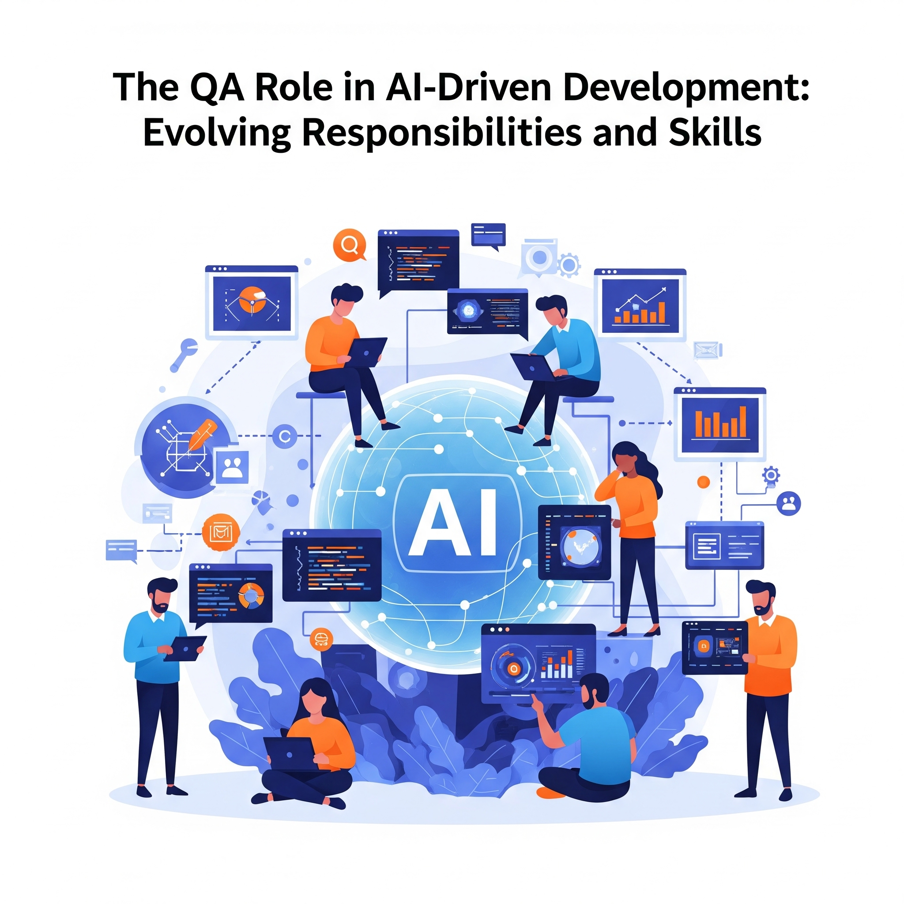

The Role of QA in an AI-Driven Development World

Key Takeaways
- QA's role is evolving in AI-driven development with tools like Google Jules
- 65% of QA professionals already use AI in their workflows
- Jules autonomously handles code analysis, testing, and PR submissions
- QA teams must adapt to become strategic orchestrators of quality
The software development landscape is undergoing a seismic shift, propelled by artificial intelligence (AI) technologies that are redefining how we build, test, and deploy applications. Among these innovations, Google's Jules, an AI-powered coding agent launched in public beta on May 20, 2025, stands out as a game-changer. Jules autonomously reads codebases, plans solutions, writes tests, and submits pull requests (PRs), all while integrating seamlessly with GitHub. As AI tools like Jules take on more development tasks, the role of Quality Assurance (QA) is evolving dramatically. This blog explores how QA professionals can adapt to an AI-driven world, with a focus on leveraging Jules to enhance testing processes, and provides actionable insights for staying relevant in this dynamic era.
The Evolution of QA in an AI-Driven World
Traditionally, QA has been about ensuring software meets functional, performance, and user experience standards through manual and automated testing. However, the rise of AI-driven development, exemplified by tools like Jules, is pushing QA toward a more strategic, collaborative, and data-driven role. According to a 2024 TestRail report, 65% of QA professionals already use AI in their workflows, signaling a shift from repetitive task execution to high-level oversight and creative problem-solving.
AI is transforming QA in several key ways:
- Automation of Repetitive Tasks: AI tools automate test case generation, execution, and maintenance, freeing QA teams to focus on strategic planning and complex scenarios.
- Enhanced Defect Detection: Machine learning (ML) algorithms analyze vast datasets to identify patterns and edge cases that manual testing might miss.
- Predictive Analytics: AI predicts high-risk areas in codebases, enabling proactive testing and reducing post-release defects.
- Continuous Feedback: Integration with CI/CD pipelines ensures real-time feedback, aligning QA with rapid development cycles.
In this context, Jules represents a leap toward autonomous development, challenging QA teams to redefine their value in ensuring software quality.
What is Jules and How Does It Work?
Jules, developed by Google's Labs and DeepMind teams, is an AI coding agent that operates asynchronously within a secure Google Cloud virtual machine (VM). Unlike traditional code assistants, Jules doesn't just suggest snippets—it clones your GitHub repository, analyzes the codebase, generates a detailed plan, and executes tasks like bug fixing, test writing, or feature development. Key features include:
- GitHub Integration: Jules creates branches and submits PRs, streamlining collaboration.
- Transparent Planning: It provides step-by-step reasoning for proposed changes, allowing developers and QA teams to review and refine plans.
- Audio Changelogs (Codecasts): Jules generates spoken summaries of commits, enhancing accessibility and team communication.
- Multi-File Handling: It manages complex, multi-file tasks with precision, ensuring comprehensive fixes.
- Secure Execution: Operations occur in isolated VMs, safeguarding data privacy.
Currently free in its beta phase with a five-task-per-day limit, Jules empowers teams to offload routine coding tasks, but its reliance on human-defined tasks means QA remains critical for guiding its efforts.
The Changing Role of QA with AI Tools Like Jules
As Jules and similar AI agents take on coding and testing tasks, QA professionals must pivot from traditional roles to become strategic orchestrators of quality. Here's how QA's role is evolving in this AI-driven world:
1. Guiding AI Agents with Precise Inputs
Jules excels at executing well-defined tasks but requires clear instructions to identify bugs or implement features. QA teams are uniquely positioned to craft detailed, context-rich task descriptions that align with project goals. For example, instead of a vague directive like "fix bugs," QA can specify "resolve null pointer exception in module X, line Y, and validate with unit tests." This ensures Jules' outputs are accurate and relevant.
2. Validating AI-Generated Code
While Jules can write tests and fix bugs, QA remains essential for validating its outputs. AI-generated code may overlook edge cases or introduce subtle errors, especially in complex systems. QA professionals must review PRs, verify test coverage, and ensure changes align with user requirements. This involves:
- Code Review: Checking Jules' diffs for correctness and adherence to coding standards.
- Test Validation: Ensuring AI-generated tests cover functional, non-functional, and edge-case scenarios.
- User-Centric Testing: Assessing whether fixes meet end-user expectations, a nuanced task AI cannot fully replicate.
3. Enhancing Test Strategy with AI Insights
Jules' ability to analyze codebases provides QA teams with data-driven insights to prioritize testing efforts. By leveraging its pattern recognition, QA can focus on high-risk areas, such as frequently modified modules or historically defect-prone code. This aligns with the predictive analytics trend, where AI identifies potential issues before they manifest.
4. Collaborating Across Teams
Jules fosters collaboration by integrating with GitHub and providing transparent plans. QA teams can work closely with developers to refine Jules' proposals, ensuring alignment with project objectives. Audio changelogs further enhance communication, allowing QA to quickly grasp code changes during sprint reviews.
5. Upskilling for AI Integration
The complexity of AI tools like Jules demands new skills in data science, ML, and natural language processing (NLP). QA professionals must learn to interact with AI systems, interpret their outputs, and integrate them into existing workflows. This shift empowers QA to contribute strategically to product development.
Benefits of Jules for QA Teams
Integrating Jules into QA processes offers significant advantages:
- Faster Bug Resolution: Jules automates bug fixes, reducing debugging time and accelerating release cycles.
- Improved Test Coverage: It generates comprehensive test cases, covering scenarios that manual testing might overlook.
- Reduced Technical Debt: By enforcing best practices, Jules ensures cleaner, maintainable code.
- Enhanced Productivity: QA teams can focus on creative tasks like exploratory testing while Jules handles routine work.
- Scalability: Jules manages large codebases efficiently, making it ideal for enterprise projects.
These benefits align with the broader trend of AI-driven QA, where tools like Katalon and LambdaTest's KaneAI also enhance efficiency and coverage.
Challenges and Considerations
Despite its potential, Jules presents challenges that QA teams must address:
- Manual Task Definition: Jules doesn't autonomously detect bugs, requiring QA to identify issues upfront.
- Accuracy Risks: As an experimental tool, Jules may propose incorrect fixes, necessitating rigorous validation.
- Complex Scenarios: Human judgment is still critical for nuanced bugs or domain-specific requirements.
- Learning Curve: Teams must adapt to Jules' workflow and upskill to leverage its full potential.
To mitigate these, QA teams should combine Jules with manual testing and maintain a robust feedback loop to refine its outputs.
Best Practices for QA Teams Using Jules
To maximize Jules' impact, QA professionals should adopt these strategies:
- Craft Detailed Prompts: Provide specific, actionable tasks to guide Jules effectively. For example, "Add input validation to form X to prevent SQL injection."
- Review and Refine Plans: Scrutinize Jules' proposed plans to ensure they align with project goals before execution.
- Integrate with CI/CD: Use Jules within CI/CD pipelines to automate test execution and validate changes in real-time.
- Leverage Codecasts: Use audio changelogs to streamline sprint reviews and improve team alignment.
- Upskill Continuously: Invest in training on AI tools, ML, and NLP to stay ahead of the curve.
- Maintain Human Oversight: Combine Jules' automation with exploratory testing to catch edge cases and ensure user-centric quality.
Real-World Applications
Jules can transform QA across various domains:
- Enterprise Software: Automate bug fixes and test generation for large, complex codebases.
- Agile/DevOps: Streamline CI/CD workflows by integrating Jules' PRs into automated testing pipelines.
- Open-Source Projects: Simplify contributions by automating routine fixes, allowing maintainers to focus on strategic reviews.
- Education: Demonstrate AI-driven development to students, highlighting the importance of QA in validating AI outputs.
The Future of QA in an AI-Driven World
As AI tools like Jules evolve, QA will increasingly focus on strategic oversight, ethical considerations, and user experience. Future advancements may include:
- Autonomous Testing: Fully AI-driven testing systems that generate, execute, and maintain tests with minimal human input.
- Predictive Bug Detection: AI models that proactively identify potential defects based on code patterns.
- Ethical QA: Ensuring AI systems like Jules avoid biases and comply with security standards.
- Cross-Platform Integration: Deeper integration with tools beyond GitHub, enhancing QA workflows.
By embracing these trends, QA professionals can remain indispensable, leveraging AI to augment their expertise rather than replace it.
Conclusion
The rise of AI-driven development, epitomized by Jules, is reshaping QA into a strategic, high-value discipline. By guiding AI agents, validating their outputs, and leveraging their insights, QA teams can enhance software quality, reduce time-to-market, and drive innovation. Jules' ability to automate bug fixes, write tests, and integrate with GitHub empowers QA professionals to focus on creative and user-centric tasks, ensuring software meets the highest standards. As the industry moves toward autonomous testing, QA professionals must upskill, adapt, and embrace tools like Jules to thrive in this AI-driven era.
Ready to revolutionize your QA process? Explore Jules by connecting it to your GitHub repository and discover how AI can elevate your testing game. Stay ahead of the curve with more insights on QA trends at QA Blogs.
Join Our Community of QA Professionals
Get exclusive access to in-depth articles, testing strategies, and industry insights. Stay ahead of the curve with our expert-curated content delivered straight to your inbox.
Nikunj Mistri
Founder, QA Blogs
About the Author